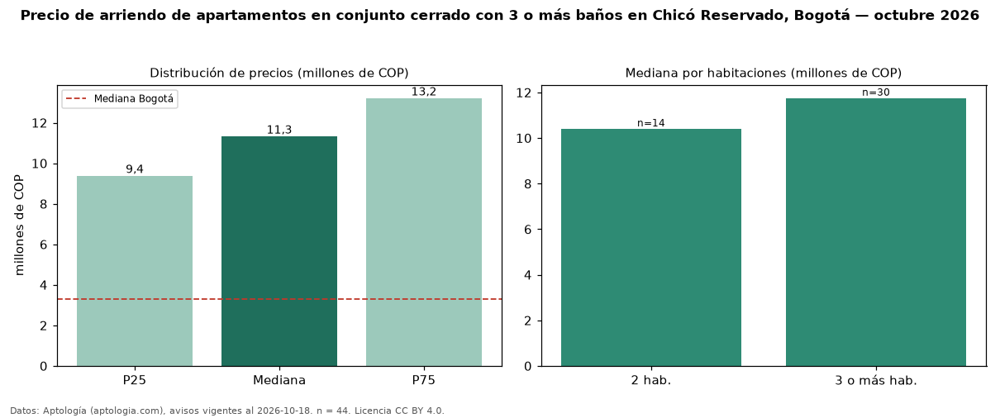

Precio de arriendo de apartamentos en conjunto cerrado con 3 o más baños en Chicó Reservado, Bogotá — octubre 2026
COP 11,33 millones al mes es el canon mediano de apartamentos en conjunto cerrado con 3 o más baños en arriendo en Chicó Reservado, Bogotá (n = 44 avisos). Frente a la mediana de los apartamentos en conjunto cerrado en arriendo de Chicó Reservado (COP 9,00 millones, n = 76), queda 26 % por encima; este segmento reúne el 58 % de esos avisos. Por metro cuadrado, la mediana es COP 60.345/m² al mes (n = 43), 11 % por debajo de los apartamentos en conjunto cerrado en arriendo de Chicó Reservado (COP 67.647/m²). El área mediana anunciada es 179 m². El segmento con más oferta es el de 3 o más habitaciones (30 avisos, mediana COP 11,75 millones); pasar de 2 habitaciones a 3 o más habitaciones cambia la mediana +13 %. La administración mediana declarada es COP 1,91 millones al mes (n = 30), aparte del canon. El estrato más frecuente es 6 (95 % de los avisos con estrato). La mediana de todos los apartamentos en arriendo de Bogotá es COP 3,30 millones (+243 % de diferencia). Datos: Aptología (aptologia.com), CC BY 4.0 — https://www.aptologia.com/arriendo/bogota/chico-reservado. Archivos: PDF, CSV con las cifras y gráfica PNG.

| Avisos únicos | 44 |
|---|---|
| Percentil 25 | COP 9.385.375 |
| Mediana | COP 11.331.000 |
| Percentil 75 | COP 13.213.750 |
| Mediana por m² | COP 60.344 |
Fuente: avisos vigentes de portales inmobiliarios recopilados por Aptología, deduplicados (mínimo 30 avisos únicos por celda). Precios pedidos, no cerrados. Fecha: 2026-10-18.